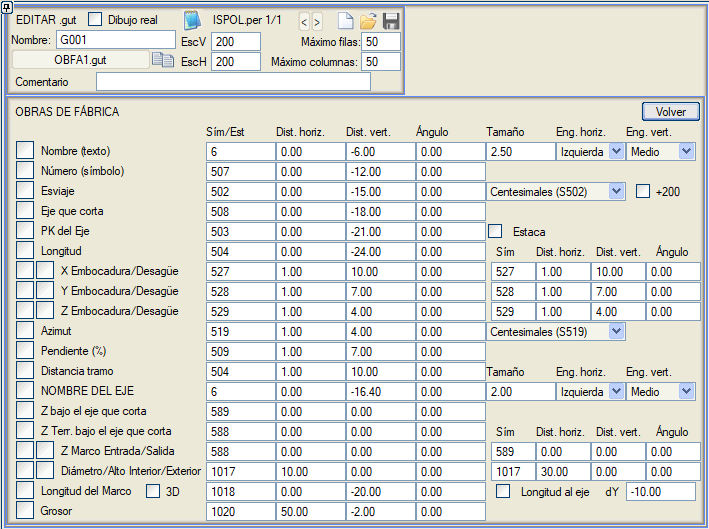
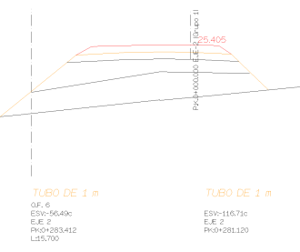

Bu menü, ENKESİT (ALZADO) menüsünün [SANAT YAPILARI] bölümünden elde edilen OF.per enkesitlerini etiketlemeyi sağlar.

Etiketleme olanakları şunlardır:
- Sanat yapısının adı, belirtilen stille etiketlenir ve sol alt köşeye, Yatay Mesafe'de belirtilen değer kadar yatay olarak ötelenmiş ve Dikey Mesafe'de belirtilen karşılaştırma düzlemine bir mesafede yerleştirilir. Ayrıca bir açı, bir boyut ve etiketin yatay ve dikey bağlantı noktası da atanabilir.
- Sanat yapısının kestiği eksene göre şevlilik açısı (esviaj), grad veya derece cinsinden. Ayrıca, bazı ülkelerdeki şevlilik açısı ölçüm kriterlerine uymak için 200/180 derece eklemek üzere yapılandırılabilir.
- ENKESİT (ALZADO) menüsünde her bir sanat yapısı tanımlanırken belirtilen, kestiği güzergah.
- Önceki güzergahla kesişim KM'si. Kazık No kutucuğu etkinleştirilerek ve kazık numarasını etiketleyen bir sembolle (S757), KM yerine kazık no değerini elde ederiz.
- Sanat yapısının toplam uzunluğu (tüm kesimlerin toplamı).
- Giriş ve çıkış ağzının koordinatları (X,Y,Z).
- Sanat yapısı ekseninin azimutu, grad veya derece cinsinden.
- Yapının her bir kesiminin mesafesi.
- Sanat yapısının kestiği güzergahın adı.
- Kestiği güzergah altındaki Z, sanat yapısının kestiği her bir güzergahın altındaki kotunu etiketler.
- Kestiği güzergah altındaki arazi Z, sanat yapısının kestiği her bir güzergahın altındaki arazi kotunu etiketler.
- Çerçevenin iç veya dış çapı veya yüksekliği.
- Çerçevenin plandaki ve 3D'deki uzunluğu. Ayrıca, ana eksenden çerçevenin her iki tarafına olan uzunluk ölçülendirilebilir.
- Çerçevenin duvarlarının kalınlığı.
Sayısal etiketler için, sembol tipini, bir yatay ötelemeyi ve bir açıyı belirtmek gerekecektir. Dikey öteleme ile ilgili olarak, bu, karşılaştırma düzlemine göre olacaktır. Numara, şevlilik açısı, kesen güzergah, güzergah KM'si ve sanat yapısının uzunluğu durumunda, giriş ve çıkış ağzı için koordinatların etiketlenmesi ve her kesimin merkezi için azimut, eğim ve kesim mesafesi.
Çok kesimli bir Sanat Yapısının profili çizildiğinde, tüm kesimler için de şunlar etiketlenir: sanat yapısının adı, şevlilik açısı, şevlilik açısının hesaplandığı güzergah ve güzergah üzerindeki kesişim KM'si.
Program kütüphanesinde bulunan obfa1.gut bilgi bandı, tüm bu seçenekleri kullanır.
|